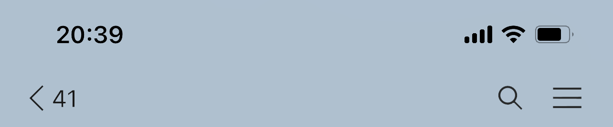

전애인과 친구하는 법
How to be Friends with your Ex

헤어지자...
아니 또야? 이번엔 정말 잘해보려 했는데 또 얼마가지 못하고 이별을 하자는 소리를 들었다. 나는 그저 안정적이고 차분한 연애관계를 원할 뿐일 텐데 왜 언제나 이런 상황에 치닫게 되는 걸까? 상대방을 구질구질하게 잡아도 보고 화도 내봤지만 이 상황을 바꿀 수 있는 방법은 없다는 것을 깨닫게 됐다. 그래 할 수 있는게 없다면 쿨하게 헤어져야지 뭘 어떻게 하겠어. 그래도 헤어지기 전에 내 어디가 마음에 안 들었던 건지 솔직하게 대답해 달라고 물어나 볼까? 그래야 다음 사랑을 만났을 때 더 잘해서 오랜 사랑을 지속할 수 있지 않을까?

내가 뭐 잘못했어?
이제 나도 슬슬 정착이라는 걸 하고싶다. 언제까지 이 나이에 데이팅 전선에 설 수는 없다. 젊고 탱탱한 남자들은 매년이 지날수록 새롭게 올라오는데 나이가 들어 축축 쳐지고 시들어가는 나는 그 사이에서 당연히 밀릴 수밖에 없지 않은가. 나도 결혼감을 찾아 백년해로 하며 행복하게 살고 싶다.
내가 무슨 문제가 있나? 내 성격이 좀 더럽긴 했다. 너무 극단적이기도 하고 말을 순화해서 말하는 것이 쓸모 없다고 생각해 너무 직설적으로 말하기도 했고. 호불호를 아주 강하게 표현하기도 했고. 이런 성격들이 나를 이 상태에 몰아넣지 않았나? 나의 성격부터 고쳐야겠다.
평소 같았으면 헤어지자는 말에 욕을 한 바가지 붓고는 핸드폰 집어 던지고 카톡도 차단하고 전화번호도 차단하고 친구란 친구들에게 죄다 전화를 걸어 전애인 욕을 무한반복으로 했겠지. 전애인과 찍은 사진들은 모두 삭제하고 SNS게시글도 모두 지우겠지. 전애인과 친한 친구와는 거리를 두고 전애인을 만날 수 있는 장소는 피해 다녔겠지. 이렇게 살다가는 내 인생에 남는 게 없겠다.

친구로 지내자...
친구로 지낼 수 없다는 걸 알지만 그래도 좋다라고 대답한다. 주변에 남아있으면 언젠가는 그의 마음을 다시 돌릴 수 있는 기회가 오지 않을까? 주변을 둘러보면 얼마든지 잘 연락하고 정말 친구처럼 지내는 사람들이 있다고 하지만 정말로 그들은 서로를 친구로 생각하고 있을까? 그들 마음속에는 친구가 아닌 뭔가 다른 관계라고 서로 생각을 하면서 지내고 있을지도 모른다는 의심을 멈출 수 없다.

친구로 지낸다는 것이 뭐지?
단지 헤어지고 서로 친구들한테 가서 쌍욕하지 말자는 암묵적인 합의일까? 아니면 정말로 친구처럼 대화도 하고 만나서 밥도 먹고 까페도 가고 노래방도 가자는 말일까? 난 정말 친구로 지내보고싶다. 미드에 나오는것처럼 전애인과 친구로 지내는 장면이 자주 나오지 않던가? 그 모습이 멋져보인다. 나도 그런 쿨한 사람이 되고싶다.
그에게 카톡도 보내고 농담도 주고받는다. SNS에서 댓글도 주고받는다. 둘이 만나서 밥도 먹고 술도 먹었다. 그가 웃는 모습을 보니까 이제 더 이상 연인사이는 아니지만 그래도 내가 왜 이 사람을 좋아했는지 알 것 같다. 내가 아직 그를 좋아한다는 말은 아니다. 우리는 이제 친구니까.

술 먹을 사람~
금요일 밤인데 같이 놀 사람이 없다. SNS에 지푸라기 잡는 심정으로 게시글을 올려본다. 아무도 반응이 없다. 치킨을 주문해야겠다. 넷플릭스나 봐야지. 타임라인 너머로 전남친도 같이 놀사람이 없다는 소식이 들려온다. 헤어지기 전까진 매주 금요일 우리 둘이 놀았었는데. 헤어졌으니 이제 놀 친구가 없어진게 당연한 건가 싶다.

같이 놀래?
전애인에게 먼저 카톡이 왔다. 술자리에 초대받았다. 빨리 준비해서 나가겠다고 답장하고 술자리에 도착하니 자기 전남친이라고 나를 소개해준다. 같은 테이블에 앉아 농담도하고 시끄럽게 떠드니 정말로 친구로 돌아간 것 같아 신이 난다. 나. 잘하고있잖아? 셀프칭찬도 한다.

괜찮지?
지나가던 전애인의 아는 사람이 그를 발견했다. 술자리에 앉아서는 지금 지인 생일파티에 가는 길이라고 설명한다. 전애인도 생일파티의 주인공과 친분이 있다. 왜 생일파티에 안 오냐는 말에 전애인은 말없이 나를 바라본다.
어안이 벙벙하다. 전애인의 술자리에 도착한지 1시간만에 그는 지인 생일파티로 떠나버렸다. 나는 오늘 처음 본 사람과 덜렁 술자리에 남겨졌다. 어색해서 할말도 없고 상대방은 술에 취해 집에 곧 갈거라고 휴대폰만 보고 내가 말을 거는게 귀찮다는 듯이 반응한다.

나는 지금 나한테 화가 나
친구를 불러내어 한탄했다. 술자리에 오라는 말에 이 밤에 집에서 나와 택시까지 타고 왔더니 자기 친구 파티있다는 말에 홀라당 가버릴수가있지? 거기 잘생기고 인기많은 사람들 많은 인싸파티인거 나도 알겠어 그런데 지금 나랑 친구로 지내기로 해놓고 처음 만난 날에 나랑 친구로 지내는거보다 인싸파티가서 친목질하는게 더 중요하다는거 아니야. 난 지금 얘랑 어떻게든 성공적으로 친구로 지내보려고 어떻게든 재미있는 기억으로 남을 술자리를 만들려고 애를 쓰면서 얘를 제일 우선 순위에 두고있는데. 얘는 아니니까 그게 너무 자존심 상하는거야.
친구 사이면 그럴수도 있는거아니야? 너가 지금 그렇게 반응하는거는 너가 걔를 친구로 생각하고있지않아서 그런거야. 감정이 남아있어서 그래
친구사이에서 충분히 일어날수있는 일이라면 왜 나는 이게 화가 나는거지? 걔에게 필요이상으로 기대를 한 내자신에게 화가 나고 그의 행동에 화를 내는 내 자신에게도 화가 나. 정말 친구라면 그냥 쿨하게 그럴수도있지 넘어갈수도있는 일 아니었을까?

미안해
함께 보냈던 시간, 나누었던 이야기들, 함께 만든 기억과 기록들이 헤어지자는 말 한마디에 변기에 물내리는 것처럼 사라진다는 것이 야속하다. 헤어졌다는 이유로 그 사람과 함께했던 모든 순간이 세상에 존재하지 않았던 것처럼 취급해야 할 필요가 있을까? 그래서 다들 친구로 지내자는 말을 하는 것이 아닐까?
그 말처럼 정말 사랑하는 사이에서 친구로 한순간에 관계가 변할 수 있다면 얼마나 좋을까? 난 정말로 노력했다. 친구로 시작했던 관계였기에 우리가 친구였을 때 어떻게 지냈더라 기억을 더듬어가며 그를 대했다.함께한 시간과 추억을 다른 형태로 유지해 나가자는 말이라면 일반적으로 우리가 친구를 만들고 우정을 유지하는 것과는 다른 노력과 관심이 필요한 과정이 되어야만 하지않을까?
헤어진 연인사이에 친구로 남는 것은 얼마든지 가능하다고 믿는다. 하지만 그와 내가 생각하는 친구의 의미는 달랐다.
친구들이 바람폈다고 놀린단 말이야
내가 바람펴서 우리 헤어진거 아니잖아. 너도 뭐가 사실인지 알잖아. 그치? 내 남자친구도 너랑 다시 친구로 지내고 싶어해. 우리 셋이 다시 잘 지내는 모습 보여주자. 그러면 사람들도 우릴 나쁘게 바라보지 않을거아니야 응?